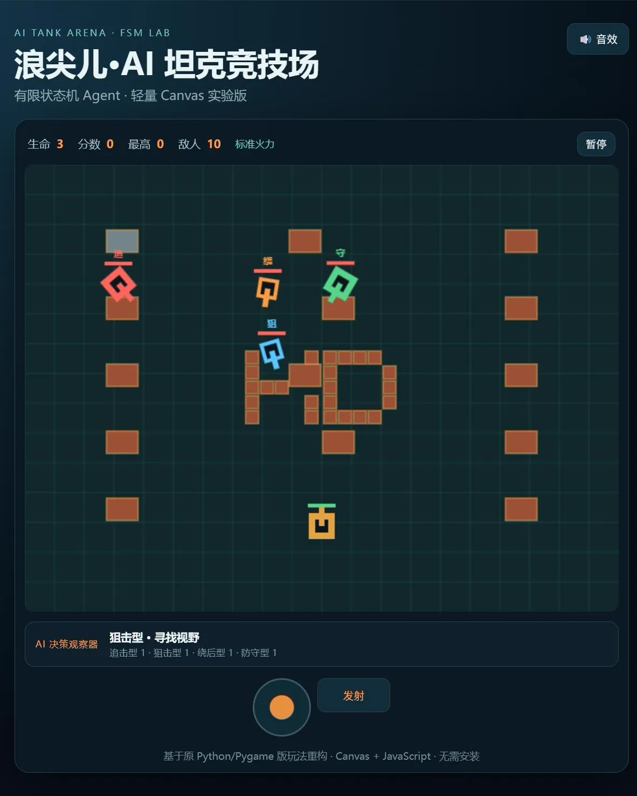
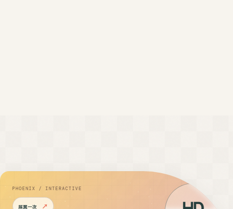

实习生 / 协作支持 @ 加华微捷科技有限公司
协助组长整理任务流程和信息记录，统一记录方式并跟进执行；整理的任务材料供组长和团队成员用于信息同步。暂无可核验的量化效率数据。
团队协作信息整理任务跟进
READY TO LEARN · ZHONGSHAN / CHINA
黄鼎
人工智能技术应用专业大一学生。我会借助 AI 工具做 Web 页面、接口联调和项目发布，也在补 Python 与独立编码基础。
目标方向AI 应用开发Web 开发
我想参加 AI 应用和 Web 开发方向的项目或竞赛。这里放的是我做过的作品、测试记录，以及目前还没解决好的问题。
01 — JOURNEY
我还在打基础。遇到不会的内容，我会先把问题拆开，做出能运行的版本，再根据测试结果继续修改。
协助组长整理任务流程和信息记录，统一记录方式并跟进执行；整理的任务材料供组长和团队成员用于信息同步。暂无可核验的量化效率数据。
完成在线简历和坦克大战附加题。我用 Codex、DeepSeek 辅助开发，也在小组和社区交流中练习需求拆解、测试和交付。
目前主要学习 Python 基础、人工智能应用和 Web 交互。我希望继续做 RAG 知识库、Python 小工具和网页项目，把课程知识放进真实作品里。
02 — SELECTED PROJECTS
每个项目都写明我做了哪些部分、怎么测试，以及目前还有哪些限制。
校园资料分散，查找成本较高；新上传资料需要审核，不能直接进入公共问答。

FSM / AI ARENA一个可以直接观察 Agent 状态变化的网页坦克游戏。
这些项目保留完整入口，首页先用更紧凑的方式展示。

PERFORMANCE CASE这个网站本身也是项目，我用它练习 3D 交互和手机端适配。
用命令行检查接口认证、流式响应和常见协议能力。
我用 Obsidian 整理学习资料、AI 工具记录和项目复盘，并为笔记补上来源和时间。
每天 08:30 读取三个 RSS 来源，整理成中文日报后推送到飞书。
03 — TOOLKIT
我在项目中实际用过这些基础技术。
这些工具都能在下面的项目里找到具体使用场景。
这些内容我还在学习，目前不会写成已经熟练掌握。
04 — CERTIFICATES
证书不能代替项目能力，所以我同时标出了相关知识在哪些作品中用过。点击可以查看原图。
已应用于API 诊断工具、文件处理和自动化脚本。
已应用于个人作品集的视觉设计、内容编排和交互展示。
已应用于Phoenix Portfolio、独立摄影空间和浪尖儿战场。
05 — VISUAL ARCHIVE
这里放着个人摄影和交互作品，点击卡片可以进入独立页面。
07 — OPTIONAL EXPERIENCES
这些是额外的互动内容，不影响你阅读前面的经历和项目。
08 — SAY HELLO
CONTACT QR
点击二维码可以查看大图。
 点击查看高清 ↗
点击查看高清 ↗